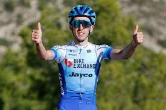

La dominante actuación de Tadej Pogacar en el Giro de Italia
El esloveno Tadej Pogacar ha sorprendido a todos con su impresionante actuación en el Giro de Italia. Con solo 22 años, el joven ciclista ha demostrado una madurez y una fuerza física que le han permitido mantenerse en la cabeza de la clasificación general durante varias etapas.
En la última etapa, Pogacar ha demostrado su capacidad para adaptarse a diferentes terrenos, imponiéndose en una emocionante llegada en alto en la que ha dejado atrás a sus rivales más directos. Su victoria en la etapa ha sido tan contundente que ha permitido al esloveno aumentar su ventaja en la clasificación general.

La emocionante carrera de Simon Yates
Simon Yates ha sido otro de los ciclistas que ha llamado la atención en el Giro de Italia. El británico ha demostrado una gran regularidad en las etapas de montaña, lo que le ha permitido mantenerse en la zona de puntos de la clasificación general.
En la última etapa, Yates ha intentado dar caza a Pogacar, pero no ha podido alcanzarle. A pesar de eso, ha demostrado una gran valentía y una gran capacidad para sufrir en la bicicleta.
